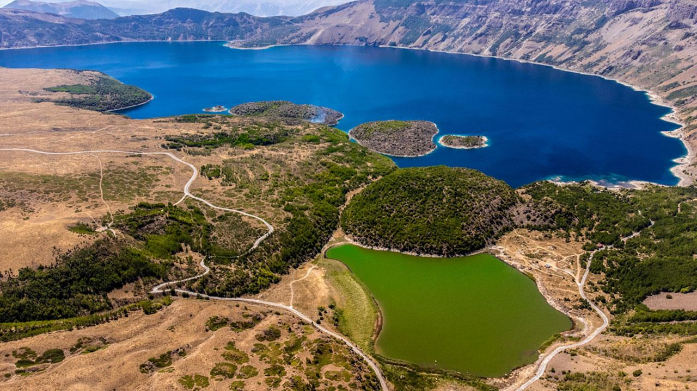

Nemrut Krater Gölü
Nemrut Krater Gölü, Türkiye'nin güneydoğusunda, Adıyaman ilinin Kahta ilçesine bağlı Adıyaman dağlarının güney eteklerinde yer alan doğal bir krater gölüdür. Bu krater gölü, Nemrut Dağı eteklerinde bulunan volkanik kraterin içinde yer almaktadır.
Nemrut Krater Gölü, yaklaşık 120 metre derinliğe ve 600 metre çapına sahip olup, kristal berraklığında suyuyla ziyaretçilerini kendine hayran bırakmaktadır. Göl, çevresi ladin ve porsuk ağaçları ile kaplı olup, doğal bir yaşam alanı oluşturmaktadır. Ayrıca göl çevresinde piknik alanları, kamp alanları ve yürüyüş parkurları bulunmaktadır.
Nemrut Krater Gölü, doğal güzellikleri, huzurlu atmosferi ve temiz suyuyla adeta bir doğa harikasıdır. Göl çevresinde bulunan trekking ve yürüyüş parkurları ile doğa yürüyüşü yapabilir, kuş gözlemi yapabilir ve doğanın tadını çıkarabilirsiniz. Ayrıca gölde kano ve botla gezinti yapma imkanı da bulunmaktadır.
Nemrut Krater Gölü, Adıyaman'da gezilecek ve keşfedilmeye değer doğal güzelliklerden biridir. Doğa ve macera tutkunları için ideal bir destinasyondur. Eğer siz de doğayla baş başa kalıp huzurlu bir mola vermek istiyorsanız, Nemrut Krater Gölü'nü ziyaret edebilir ve unutulmaz bir deneyim yaşayabilirsiniz.